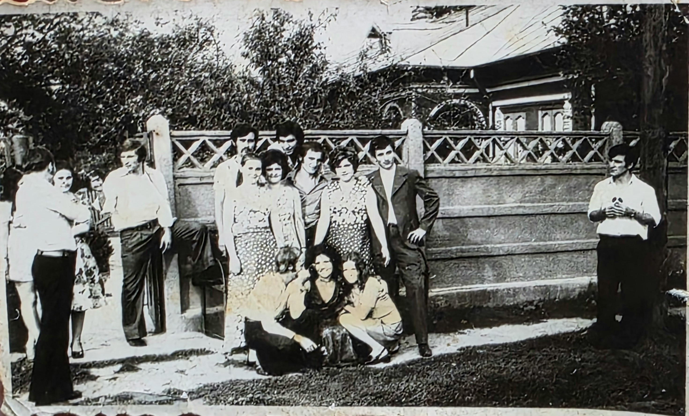

It is raining hard tonight. You reach into your coat pocket and find an old train ticket you have never seen before.
There is no name on it, and no destination. Just one line, printed in faded ink.
Punched 11:47
Admit one, platform 3
Your last train leaves at 11:47.
Destination: Unknown
Find out where this ticket will take you.
There is no one here. The big clock above the hall has stopped. Three doors stand open, and the gate to the platform is shut.
Where do you want to look first?
Clues found: 0 / 3
Items: none
The window is dusty and the booth is dark. An old timetable is pinned to the glass. Your ticket feels heavier in your hand here.
Punched 11:47
Admit one, platform 3
Your last train leaves at 11:47.
Destination: Unknown
It is almost too dark to see. You can make out a long wooden bench, a desk lamp, and a small frame on the wall.

In the photo, the child holds a blue paper train.
On the back: "Our first journey. 11:47 p.m."
Shelves of forgotten umbrellas and single gloves. In the corner stands an old wooden cabinet. Its label shows a small blue paper train.
To the grown-up me,
If you ever forget where you wanted to go, come back and find our blue paper train. Remember the kid who wanted to see the whole world.
You, age ten
The gate swings open. Rain taps on the roof, and the ticket in your hand is no longer blank.
Punched 11:47
Admit one, platform 3
Your last train leaves at 11:47.
Destination: The Beginning
The train to your forgotten promise is waiting. What do you do?